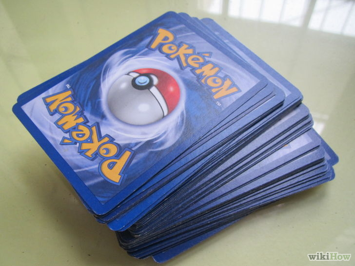
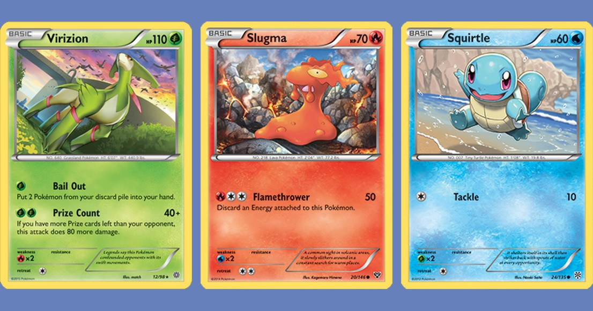
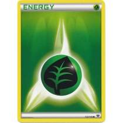

Tutorial > Como Jogar
Saiba tudo sobre o Pokémon TCG
por Gustavo Henrique
Atualizado em 11/03/2017
O que é?
Se você gosta dos filmes, da série animada e dos games do universo Pokémon, quem sabe não gostará também do jogo de cartas colecionáveis, Pokémon TCG. Esta é uma maneira excelente de se divertir com amigos e de experimentar a emoção de uma batalha Pokémon na vida real! Leia o artigo abaixo para saber como jogar Pokémon TCG.
1.BARALHO
Embaralhe suas cartas. O baralho (ou deck) de cada jogador deve ter 60 cartas bem embaralhadas. Algo entre um quarto e um terço desse número deve ser destinado a cartas de energia.
2.Tire sete cartas do topo do baralho e deixe-as à parte, viradas para baixo.

3.Deixe o deck ao seu lado. Ele normalmente fica à direita do jogador, no lado oposto ao das cartas-prêmio. Próximo a ele, fica a pilha de descarte.
4.Encontre seus Pokémon básicos. Procure uma carta de Pokémon básico nas sete que você tem na mão. Não havendo nenhuma, embaralhe o deck novamente e tire mais sete cartas. A cada vez que você fizer isso, seu oponente tem direito a tirar uma carta extra.

5.Escolha o Pokémon ativo.
Coloque à sua frente e virada para baixo a carta do Pokémon básico que você usará para atacar. Se há mais de uma carta desse tipo na sua mão, você pode colocá-las enfileiradas no banco de reservas, atrás do Pokémon de ataque. O banco pode ter, no máximo, cinco Pokémon.
6.Tire suas seis cartas-prêmio.
Empilhe-as viradas para baixo, sem olhar para elas. A cada vez que você derrotar um Pokémon do adversário, poderá pegar uma dessas cartas, e vencerá o jogo se suas cartas-prêmio acabarem primeiro. Se você e seu oponente quiserem uma partida mais rápida, podem combinar um número menor de cartas-prêmio.
7.Determinem quem joga primeiro.Use uma moeda para descobrir quem fará a jogada inaugural da partida. O primeiro a jogar não pode atacar.
8.Vire as cartas na direção certa. Quando estiver pronto para começar, vire o Pokémon ativo e os do banco para cima. Todas as cartas restantes — as da sua mão, as cartas-prêmio e o deck — devem estar viradas para baixo. Você pode olhar as cartas que tem na mão, mas não as cartas-prêmio.
9.Jogue até alguém ganhar. Você ganha se as suas cartas-prêmio acabarem antes que as do adversário; se ele precisar tirar uma carta, mas não puder porque acabaram as cartas do seu deck; ou se você derrotar todos os Pokémon do campo adversário.
10.Ponha no banco os Pokémon básicos. Se você tem Pokémon desse tipo em sua mão, coloque-os no banco. Isso pode ser feito quantas vezes o jogador desejar, desde que o banco não tenha mais do que cinco Pokémon.
11.CARTAS DE ENERGIA.
O jogador tem a liberdade de ligar uma carta de Energia a um Pokémon da mesa por turno. Basta colocá-la sob o Pokémon, por baixo da carta de forma básica.
12.CARTAS DE ITEM.
Use uma carta de item. Cada uma oferece uma vantagem diferente, explicada na própria carta. Os itens se dividem em quatro categorias: Treinador, Apoio, Ferramenta e Estádio. A cada rodada, o jogador pode usar quantas cartas de Treinador quiser, mas apenas uma de Apoio. Uma vez usadas, elas vão para a pilha de descarte. Cada Pokémon pode ser ligado a apenas uma carta Ferramenta, que ficará com ele até que ele seja derrotado — nesse caso, ambas cartas vão para a pilha de descarte. A carta de Estádio é colocada na horizontal, entre os campos dos dois jogadores, e é descartada quando um dos jogadores baixar outra carta do mesmo tipo. Existem ainda cartas de Energia com efeitos adicionais, descritos nas próprias cartas.
13.EVOLUÇÃO.
Pode-se evoluir um Pokémon ativo ou no banco colocando sobre ele a carta que corresponde à sua forma evoluída. Um Pokémon básico evolui para um de primeiro estágio, e este, para um de segundo estágio. Não se pode evoluir um Pokémon sem antes executar um movimento com ele, a não ser pelo uso de uma carta de efeito especial. Também não se pode evoluir um Pokémon na primeira rodada da partida.
14.HABILIDADE.
Alguns Pokémon têm habilidades, sempre descritas na própria carta, que rendem efeitos especiais.15.RECUO.
Recuar significa trocar o Pokémon ativo por outro que está no banco. Mas recuar tem um custo: descartar a carta de energia ligada ao Pokémon em questão. Se a recuada tiver custos adicionais, eles estarão descritos na parte de baixo da carta. Você pode recuar apenas uma vez a cada rodada.
16.ATACANDO.
A última coisa que você pode fazer no seu turno é atacar o Pokémon ativo do oponente com o seu. Depois disso, acaba-se o turno. Se você for o primeiro a jogar, não poderá atacar na primeira rodada. Explicaremos melhor no Método abaixo. Para tanto, você precisará da quantidade e do tipo de energia que o ataque demanda (listado na carta do Pokémon, à esquerda do nome do ataque).
Alguns ataques exigem cartas de energia incolor, identificadas pelas estrelas brancas, que podem substituir qualquer tipo de energia. E há ataques que requerem tipos específicos de energia. Observe as fraquezas do oponente. A maioria das cartas sofre pontos de dano adicionais quando é atacada pelo tipo de Pokémon ao qual é vulnerável.
Verifique o tipo de ataque a que o Pokémon é resistente. Ele sofrerá menos dano se for atacado por uma carta desse tipo.
Realize o ataque. O número do dano causado por um ataque está listado na carta, ao lado do nome do ataque. Tal número será descontado dos pontos de vida do Pokémon adversário. Os pontos de vida de cada Pokémon são monitorados com medidores de dano, cada qual equivale a 10 pontos de desconto. Você pode usar dados, os medidores oficiais ou qualquer objeto pequeno e plano como medidor de dano.
Descarte os Pokémon fora de combate. Quando atinge zero pontos de vida, o Pokémon fica fora de combate. Coloque a carta, bem como as evoluções, energias e itens ligadas a ela, na pilha de descarte. Então, o jogador que provocou a derrota do Pokémon tem direito a uma carta-prêmio.
17. CONDIÇÕES ESPECIAIS.
Veja sobre condições especiais na nossa seção: Veja sobre condições especiais18.ANALISANDO UMA CARTA.

| Tipo: | Elétrico |
| Nível: | Básico |
| Fraqueza: | Terra/Lutador |
| Resistência: | - |
| Recuo: | 1 |
Vídeo mais recente: